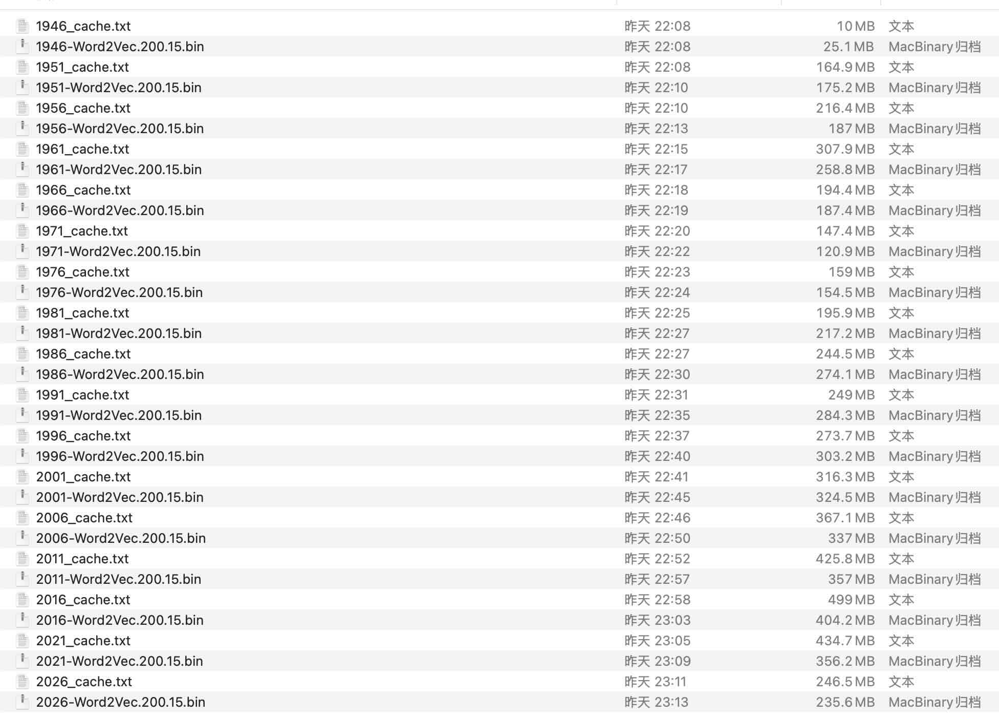
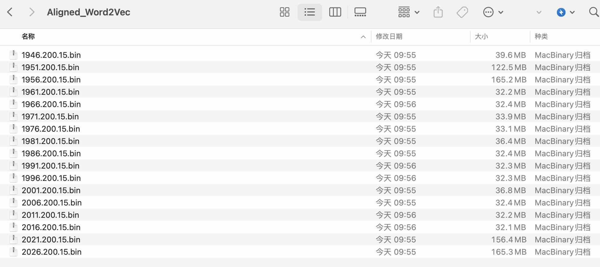
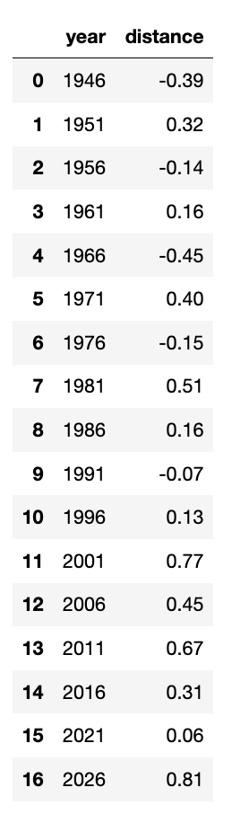
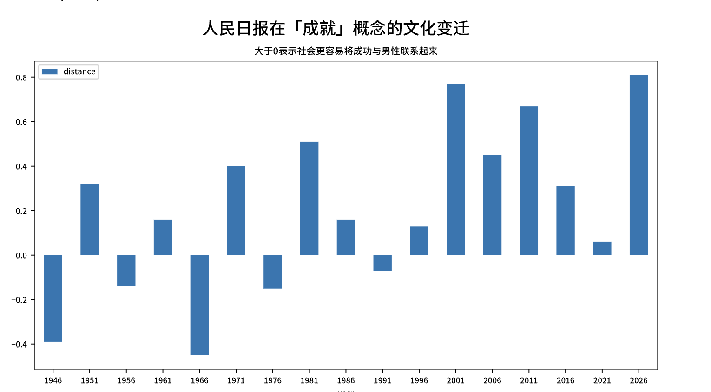
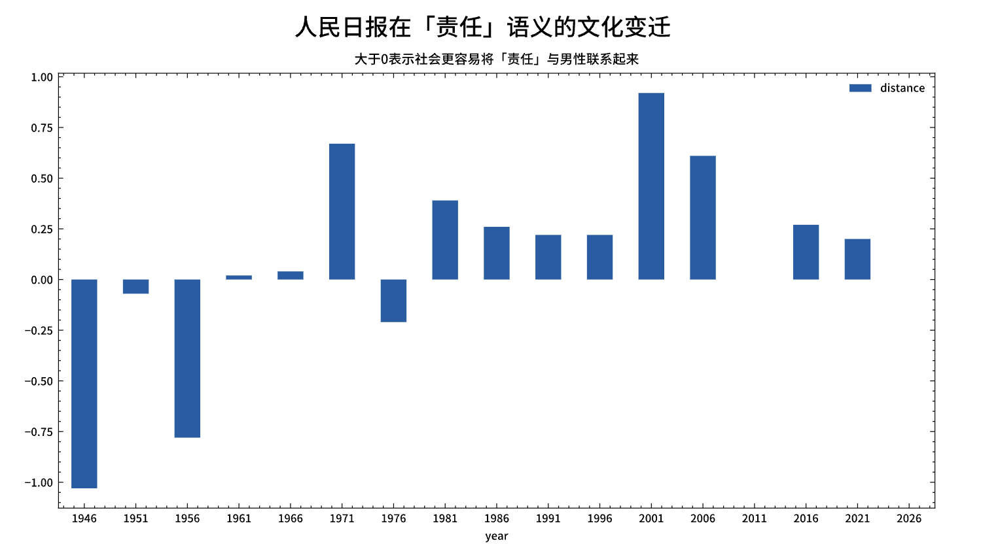

一、引言
社会文化是一个不断演变的复杂系统，受到历史、科技、经济和社会变革等多种因素的影响。随着时代的推移，人们的语言使用和文化认知也经历着变迁，反映着社会的发展脉络。在这个背景下，使用Word2Vec等词嵌入技术来研究社会文化变迁和刻板印象的重要性日益凸显。
Word2Vec作为一种词向量表示方法，通过将词汇映射到高维空间中的向量，有效地捕捉了词语之间的语义关系。这使得我们能够以全新的方式理解语言的演变和文化认知的转变。通过对比不同时期的Word2Vec模型，我们可以深入挖掘语言的时代特征，捕捉到文化观念、价值观念以及社会角色的演变。
研究社会文化变迁和刻板印象，不仅有助于解构历史时刻下的社会结构和文化动态，还能为我们提供深刻的洞察力，揭示出社会变迁中潜在的驱动力和趋势。这种研究有助于建构更为全面、客观的历史记忆，帮助我们更好地理解人类行为背后的深层次原因。
二、训练模型
2.1 获取数据
2.2 构造语料
本使用的 rmrb.csv.gz 对该数据集感兴趣的同学，可点击查看 新闻数据集 | 含 人民日报/经济日报/光明日报 等数十家媒体(2024.05) 。
%%time
from pathlib import Path
df['date'] = pd.to_datetime(df['date'])
# 每5年构造一个语料txt文件
for date, freq_df in df.groupby(pd.Grouper(key='date', freq='5YE')):
print(date)
corpus_dir = Path('corpus')
corpus_dir.mkdir(parents=True, exist_ok=True)
corpus_file = corpus_dir / f"{date.year}.txt"
with open(corpus_file, 'w', encoding='utf-8') as f:
text_series = freq_df['content'].fillna('')
raw_text = '\n'.join(text_series)
f.write(raw_text)
Run
1946-12-31 00:00:00
1951-12-31 00:00:00
1956-12-31 00:00:00
1961-12-31 00:00:00
1966-12-31 00:00:00
1971-12-31 00:00:00
1976-12-31 00:00:00
1981-12-31 00:00:00
1986-12-31 00:00:00
1991-12-31 00:00:00
1996-12-31 00:00:00
2001-12-31 00:00:00
2006-12-31 00:00:00
2011-12-31 00:00:00
2016-12-31 00:00:00
2021-12-31 00:00:00
2026-12-31 00:00:00
CPU times: user 2.64 s, sys: 1.54 s, total: 4.18 s
Wall time: 5.29 s
语料txt命名规则， 实际上每个 year.txt 是存储了 year-5 ~ year 期间的新闻数据。
1946.txt 内实际上只存储了 1946.5.15 ~ 1946.12.31 之间半年多的数据， 由于数据量太小，后续训练出的 word2vec 模型，其语义大概率不准。
2006.txt 存储了 2002.1.1. ~ 2006.12.31 之间所有的数据
而 2026.txt 则存储了 2022.1.1 ~ 2026.12.31 之间所有的数据
三、训练word2vec
3.1 配置环境
cd desktop
pip3 install cntext --upgrade
``
<br>
### 3.2 开始训练
训练代码比较简单，已经封装到 **cntext*， 只需几行代码即可。且 cntext 对代码进行了优化， 训练速度更快， 内存占用更小。
训练环境 Mac 内存 96G， 大家回去可以试试 16G、32G，应该也能跑通。
```python
%%time
import cntext as ct
import glob
# 获取corpus文件夹内的所有语料txt文件的文件路径
corpus_files = sorted(glob.glob('corpus/*.txt'))
for corpus_file in corpus_files:
print(corpus_file)
# 结果自动保存到output文件夹内
w2v = ct.Word2Vec(corpus_file=corpus_file,
vector_size=200,
window_size=15,
min_count=5)
Run
Mac(Linux) System, Enable Parallel Processing
Cache output/1946_cache.txt Not Found or Empty, Preprocessing Corpus
Processing Corpus: 100%|███████████████████| 5954/5954 [00:07<00:00, 757.68it/s]
Reading Preprocessed Corpus from output/1946_cache.txt
Start Training Word2Vec
Word2Vec Training Cost 16 s.
Output Saved To: output/1946-Word2Vec.200.15.bin
......
......
......
corpus/2026.txt
Mac(Linux) System, Enable Parallel Processing
Cache output/2026_cache.txt Not Found or Empty, Preprocessing Corpus
Processing Corpus: 100%|██████████████| 105037/105037 [00:34<00:00, 3075.29it/s]
Reading Preprocessed Corpus from output/2026_cache.txt
Start Training Word2Vec
Word2Vec Training Cost 194.
Output Saved To: output/2026-Word2Vec.200.15.bin
CPU times: user 2h 38min 4s, sys: 4min 41s, total: 2h 42min 45s
Wall time: 1h 5min 39s

四、检查模型
现在我们要检查模型， 为了方便，我就随机抽查 1946/1981/2001/2026， 查看这四个模型关于「工业」的近义词，看模型语义捕捉的准不准。
import cntext as ct
mfiles = ['output/1946-Word2Vec.200.15.bin',
'output/1981-Word2Vec.200.15.bin',
'output/2001-Word2Vec.200.15.bin',
'output/2026-Word2Vec.200.15.bin']
for mfile in mfiles:
w2v_model = ct.load_w2v(mfile)
print(mfile)
word_scores = w2v_model.most_similar(['工业'], topn=20)
for word, score in word_scores:
print(word, score)
print()
Run
output/1946-Word2Vec.200.15.bin
市场 0.9601176381111145
重工业 0.9589242935180664
工业部门 0.9484396576881409
物价 0.9464751482009888
商业 0.9423016309738159
工业原料 0.9378510117530823
焦煤 0.9368941783905029
物价暴涨 0.9348677396774292
第一年 0.9331346154212952
农产品 0.9329909682273865
输入 0.9329512119293213
农业 0.9327669143676758
水平 0.9323830008506775
通货 0.9320995807647705
国民经济 0.9268764853477478
投资 0.9261932373046875
输出 0.9258642792701721
钢铁工厂 0.925421953201294
工业生产 0.9251945614814758
十三亿 0.9251589775085449
Loading output/1981-Word2Vec.200.15.bin...
output/1981-Word2Vec.200.15.bin
工业部门 0.6696006655693054
重工业 0.6490920782089233
建筑业 0.6461381316184998
轻工业 0.6443966627120972
工业生产 0.6364479064941406
机器制造业 0.6220380067825317
化学工业 0.6116607785224915
钢铁工业 0.5941601991653442
加工工业 0.5932750701904297
电子工业 0.5880091190338135
轻纺工业 0.5786471366882324
食品工业 0.5777474045753479
重工业轻工业 0.5734774470329285
民用工业 0.5729294419288635
消费品生产 0.5721379518508911
纺织业 0.56629878282547
农业轻工业 0.5642068982124329
机器制造 0.5622154474258423
制造业 0.5620284676551819
化工 0.5588406324386597
Loading output/2001-Word2Vec.200.15.bin...
output/2001-Word2Vec.200.15.bin
重工业 0.6766582727432251
工业生产 0.6742461323738098
制造业 0.641242504119873
轻工业 0.615958571434021
传统产业 0.6039909720420837
加工工业 0.5936708450317383
机械电子 0.5892737507820129
工业部门 0.5891364216804504
轻工 0.5785651803016663
化学工业 0.5783289670944214
纺织 0.5708677172660828
支柱行业 0.5655868053436279
钢铁工业 0.5648497939109802
化工 0.5617026686668396
机械工业 0.5609593987464905
振兴国防科技 0.5588745474815369
纺织业 0.5520373582839966
工业体系 0.5505329370498657
工业总产值 0.5477191805839539
冶金纺织 0.5463222861289978
Loading output/2026-Word2Vec.200.15.bin...
output/2026-Word2Vec.200.15.bin
制造业 0.6705414056777954
工业生产 0.6067013144493103
智能制造 0.5936543941497803
轻工业 0.5885797142982483
钢铁行业 0.5884692072868347
化工 0.5675483345985413
钢铁企业 0.5637045502662659
工业互联网 0.559167742729187
装备制造业 0.5545477271080017
制造 0.5482359528541565
建筑业 0.5467448234558105
冶金 0.5400071740150452
规模工业 0.5395020246505737
重工业 0.537196695804596
钢铁 0.5245063304901123
工业遗产 0.5208563804626465
钢铁工业 0.5142995715141296
改数 0.512413740158081
纺织业 0.5109716653823853
规上工业 0.5082385540008545
从四个年代，我们可以看到中国人民对于 「工业」的认识发生了变化， 相比建国初期的一穷二白，工农业等领域经济凋敝； 而2026年的「工业」已实现工业现代化，更加注制造业、智能制造、工业互联网、装备制造业等概念。
五、对齐模型
5.1 为什么要进行对齐?
Word2Vec是一种词嵌入（word embedding）算法，它将词语映射到高维空间中的向量，使得语义相近的词在该空间中距离较近。然而，不同年份的Word2Vec模型在训练时可能受到不同的语料库、训练参数等因素的影响，导致它们的向量空间之间存在一定的差异，所以不能直接拿不同年年份模型直接进行语义比较。
Procrustes对齐算法目的是通过线性变换来使两个向量空间尽可能地对齐，以便进行比较。这个过程涉及到对两个向量空间进行旋转、缩放和平移等变换，使它们在某种意义上尽量一致。
具体原因包括：
- 词汇漂移（Lexical Drift）： 随着时间的推移，词汇的含义和使用可能发生变化，导致不同年份的语料库中的词语存在一定的漂移。Procrustes分析可以在一定程度上对齐这种漂移。
- 训练参数不同： Word2Vec模型的训练参数，如窗口大小、迭代次数等，可能在不同年份有所不同，导致生成的向量空间差异较大。
- 语料库的差异： 不同年份的语料库可能覆盖的主题、文体等存在差异，这也会影响词向量的学习结果。
通过Procrustes对齐，可以在一定程度上解决这些问题，使得不同年份的Word2Vec模型在语义上更具可比性。这有助于在跨时间的语料库中进行一致的语义分析。
5.2 对齐之后
对齐后的Word2Vec模型进行的语义变迁研究：
- 词义演变： 比较不同年份相同词汇的词向量，观察其在向量空间中的位置变化，分析词义在语义空间中的演变趋势。
- 语境变迁： 考察同一词语在不同年份的上下文中的变化，了解词语在不同语境下的语义演变情况。
- 主题变迁： 通过对齐后的向量空间，分析不同年份语料库中词语的主题分布变化，探讨社会、文化因素对语言使用的影响。
- 时代特征分析： 通过对比不同年份的模型，识别出每个时期在词向量空间中的独特特征，从而揭示时代背景对语义的影响。
- 探索新兴词汇： 通过对比不同年份的模型，发现在语义空间中新兴词汇的出现和演变，了解新兴概念和文化趋势。
总的来说，通过对齐Word2Vec模型，你可以更准确地比较不同年份的语料库，深入研究语义的演变和语言使用的变迁。这有助于揭示社会、文化、科技等方面的发展对语言表达的影响。
5.3 对齐代码
%%time
import cntext as ct
from pathlib import Path
import glob
# 基准模型
base_wv = ct.load_w2v('output/2026-Word2Vec.200.15.bin')
#将其他模型与基准模型对齐
for file in glob.glob('output/*.bin'):
print(file)
other_wv = ct.load_w2v(file)
procrusted_w2v = ct.procrustes_align(base_wv=base_wv,
other_wv=other_wv)
# win
#year = file.split('\\')[-1][:4]
# mac
year = file.split('/')[-1][:4]
output_dir = Path('Aligned_Word2Vec')
output_dir.mkdir(parents=True, exist_ok=True)
procrusted_w2v.save_word2vec_format(f'Aligned_Word2Vec/{year}.200.15.bin', binary=True)
Run
Loading output/2026-Word2Vec.200.15.bin...
output/1956-Word2Vec.200.15.bin
Loading output/1956-Word2Vec.200.15.bin...
output/2026-Word2Vec.200.15.bin
Loading output/2026-Word2Vec.200.15.bin...
output/2021-Word2Vec.200.15.bin
Loading output/2021-Word2Vec.200.15.bin...
output/1951-Word2Vec.200.15.bin
Loading output/1951-Word2Vec.200.15.bin...
output/1946-Word2Vec.200.15.bin
Loading output/1946-Word2Vec.200.15.bin...
output/2001-Word2Vec.200.15.bin
Loading output/2001-Word2Vec.200.15.bin...
output/1981-Word2Vec.200.15.bin
Loading output/1981-Word2Vec.200.15.bin...
output/1971-Word2Vec.200.15.bin
Loading output/1971-Word2Vec.200.15.bin...
output/1976-Word2Vec.200.15.bin
Loading output/1976-Word2Vec.200.15.bin...
output/2006-Word2Vec.200.15.bin
Loading output/2006-Word2Vec.200.15.bin...
output/1986-Word2Vec.200.15.bin
Loading output/1986-Word2Vec.200.15.bin...
output/1961-Word2Vec.200.15.bin
Loading output/1961-Word2Vec.200.15.bin...
output/2011-Word2Vec.200.15.bin
Loading output/2011-Word2Vec.200.15.bin...
output/1991-Word2Vec.200.15.bin
Loading output/1991-Word2Vec.200.15.bin...
output/2016-Word2Vec.200.15.bin
Loading output/2016-Word2Vec.200.15.bin...
output/1996-Word2Vec.200.15.bin
Loading output/1996-Word2Vec.200.15.bin...
output/1966-Word2Vec.200.15.bin
Loading output/1966-Word2Vec.200.15.bin...
CPU times: user 1min 8s, sys: 49.7 s, total: 1min 58s
Wall time: 46.3 s

六、实验-文化变迁
时代的宣传必然在语义中深刻的影响社会认知，不同时代语料中必然蕴含着不同的文化特征，如语义距离的变化。这里我演示 两个对立词组分别与目标词组进行语义距离计算， 根据语义距离反应刻板印象态度偏见，其实这也反映了文化变迁。
6.1 性别与成功
男性、女性与成功之间的语义距离
cntext 内置了两种算法， 语义投影和语义距离，
distance = distance(女, 成功) - distance(男, 成功)
如果distance趋近于0， 男女在成功概念上语义接近， 无明显刻板印象。
但是当distance明显大于0， 当人们聊到成功概念时，更容易联想到男性，而不是女性。
import pandas as pd
import glob
gender_suceess_data = []
words = ['成功', '成就', '胜利']
c_words1 = ['女', '女人', '她', '母亲', '女儿', '奶奶']
c_words2 = ['男', '男人', '他', '父亲', '儿子', '爷爷']
# 当前代码所处文件 与 Aligned_Word2Vec 处于同一文件夹内
mfiles = sorted(glob.glob('Aligned_Word2Vec/*.bin'))
for file in mfiles:
distance = ct.sematic_distance(wv=ct.load_w2v(file),
words=words,
c_words1=c_words1,
c_words2=c_words2)
data = dict()
data['year'] = file.split('/')[-1][:4]
data['distance'] = distance
gender_suceess_data.append(data)
gender_success_df = pd.DataFrame(gender_suceess_data)
gender_success_df

import matplotlib.pyplot as plt
import matplotlib_inline
matplotlib_inline.backend_inline.set_matplotlib_formats('png', 'svg')
import warnings
import cntext as ct
import scienceplots
import pandas as pd
import glob
plt.style.use(['science', 'no-latex', 'cjk-sc-font'])
ct.matplotlib_chinese() #为正常显示中文
gender_suceess_data = []
words = ['成功', '成就', '胜利']
c_words1 = ['女', '女人', '她', '母亲', '女儿', '奶奶']
c_words2 = ['男', '男人', '他', '父亲', '儿子', '爷爷']
mfiles = sorted(glob.glob('Aligned_Word2Vec/*.bin'))
for file in mfiles:
distance = ct.sematic_distance(wv=ct.load_w2v(file),
words=words,
c_words1=c_words1,
c_words2=c_words2)
data = dict()
data['year'] = file.split('/')[-1][:4]
data['distance'] = distance
gender_suceess_data.append(data)
gender_success_df = pd.DataFrame(gender_suceess_data)
gender_success_df.set_index('year').plot(figsize=(10, 5), kind='bar')
plt.suptitle('人民日报在「成就」概念的文化变迁', size=15)
plt.xticks(rotation=0)
plt.title('大于0表示社会更容易将成功与男性联系起来')

从图中可以看到， 新中国初期， 我国的女性解放运动在全世界都是领先的，成果十分卓著。而今耳熟能详的口号恰好说明当时的宣传已经刻入每个中国人的认知中，如
- 谁说女子不如男
- 不爱红装爱武装
- 女人撑起半边天
...
提到「成功概念」时，在新中国初期，由于破除性别刻板印象，宣传更加中性， 立榜样考虑了性别的平衡。而随着时间推移，口号式的宣传运动沉寂后， 历史的惯性(传统文化的基因)可能会重新复活， 提到「成功概念」时，社会更容易将「成功」与「男性」联系起来。
5.2 性别与责任
成就与男性有更高的关联， 背后是否意味着传统文化建构的社会要求男性承担远多于女性的责任。
import matplotlib.pyplot as plt
import matplotlib_inline
matplotlib_inline.backend_inline.set_matplotlib_formats('png', 'svg')
import warnings
import cntext as ct
import scienceplots
import pandas as pd
import glob
plt.style.use(['science', 'no-latex', 'cjk-sc-font'])
ct.matplotlib_chinese() #为正常显示中文
gender_responsibility_data = []
words = ['责任', '重担', '担当']
c_words1 = ['女', '女人', '她', '母亲', '女儿', '奶奶']
c_words2 = ['男', '男人', '他', '父亲', '儿子', '爷爷']
mfiles = sorted(glob.glob('Aligned_Word2Vec/*.bin'))
for file in mfiles:
distance = ct.sematic_distance(wv=ct.load_w2v(file),
words=words,
c_words1=c_words1,
c_words2=c_words2)
data = dict()
data['year'] = file.split('/')[-1][:4]
data['distance'] = distance
gender_responsibility_data.append(data)
gender_responsibility_df = pd.DataFrame(gender_responsibility_data)
gender_responsibility_df.set_index('year').plot(figsize=(10, 5), kind='bar')
plt.xticks(rotation=0)
plt.suptitle('人民日报在「责任」语义的文化变迁', size=15)
plt.title('大于0表示社会更容易将「责任」与男性联系起来')

从图中可以看出，在大多数年份， distance是大于0的，即 提到「责任」概念时，社会更容易联想到「男性」，而不是「女性」。
七、获取资源
- 免费 Word2Vec https://pan.baidu.com/s/1Ru_wxu9egsmhM7lATjSlgQ?pwd=bcea
- 免费 Aligned_Word2Vec https://pan.baidu.com/s/1IVgP0MyQpez0hpoJyEyFdA?pwd=7qsu
cntext使用声明
如在研究或项目中使用 cntext ，请在文中介绍并附引用声明。引用格式可参考 cntext 推荐引用格式
相关内容
[1]冉雅璇,李志强,刘佳妮,张逸石.大数据时代下社会科学研究方法的拓展——基于词嵌入技术的文本分析的应用[J].南开管理评论:1-27.
[2]Hamilton, William L., Jure Leskovec, and Dan Jurafsky. "Diachronic word embeddings reveal statistical laws of semantic change." arXiv preprint arXiv:1605.09096 (2016).
[3]Garg, Nikhil, Londa Schiebinger, Dan Jurafsky, and James Zou. "Word embeddings quantify 100 years of gender and ethnic stereotypes." Proceedings of the National Academy of Sciences 115, no. 16 (2018): E3635-E3644.
[3]Aceves, Pedro, and James A. Evans. “Mobilizing conceptual spaces: How word embedding models can inform measurement and theory within organization science.” Organization Science (2023).
[4]Kozlowski, A.C., Taddy, M. and Evans, J.A., 2019. The geometry of culture: Analyzing the meanings of class through word embeddings. American Sociological Review, 84(5), pp.905-949.